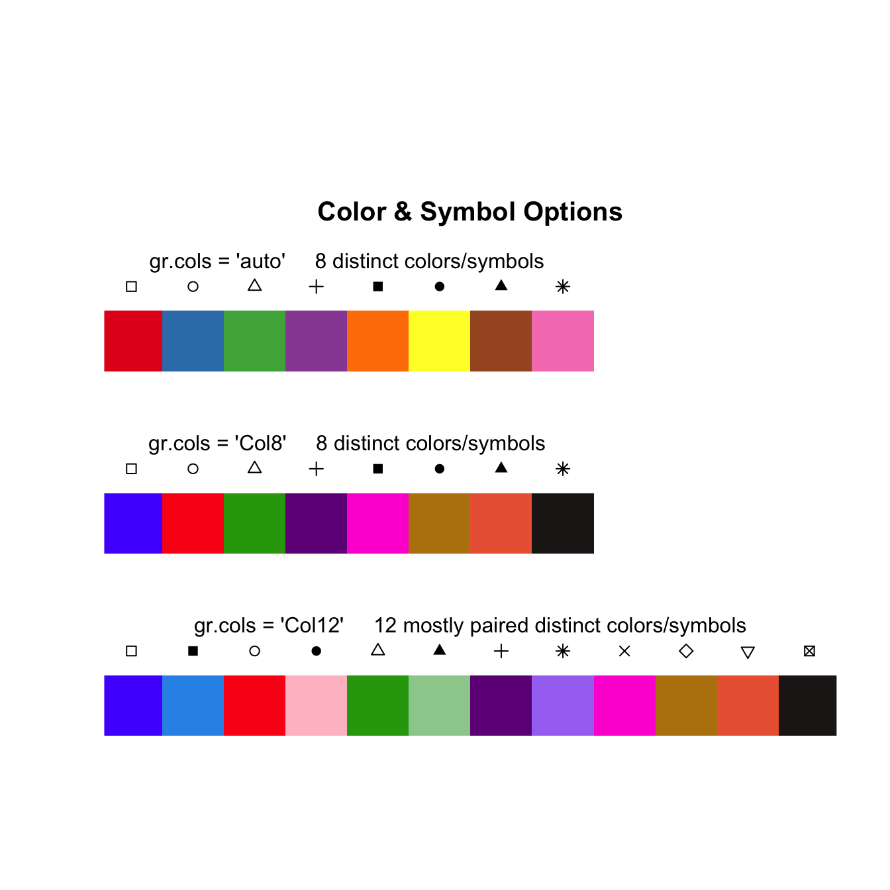

ChemoSpecUtils, a package that supports the common needs of ChemoSpec and ChemoSpec2D, has been updated on CRAN and is coming to a mirror near you. Noteworthy changes:
- There are new color options available in addition to the
autocolor scheme used during data importing. These should be useful to normal-vision individuals when there are a lot of categories. Theautooption remains the default to avoid breaking anyone’s code. All the built-in color schemes are shown below. They can be used in any of the import functions in either package. The code used to make the figure below is in?colorSymbol. Note: you probably should get thedevelversion toChemoSpecin order to see the documentation about how to use the new colors. - The function
removeFreqinChemoSpecnow accepts a formula for the specification of the frequencies to remove. This brings it in line with the corresponding function inChemoSpec2D. This should be a lot easier to use. - The function
sampleDistis now available and replacessampleDistSpectra. Again the functions in the two overlying packages are essentially as similar as they can be. - This version is compatible with the upcoming release of
R4.0.